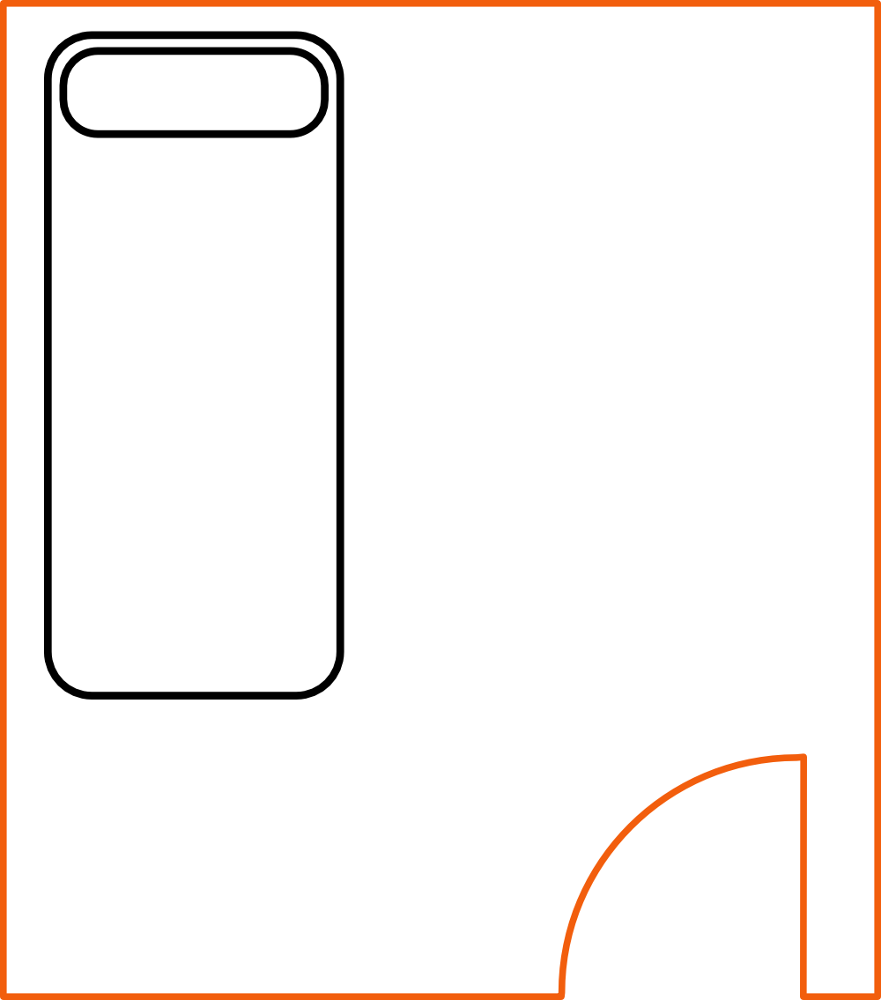
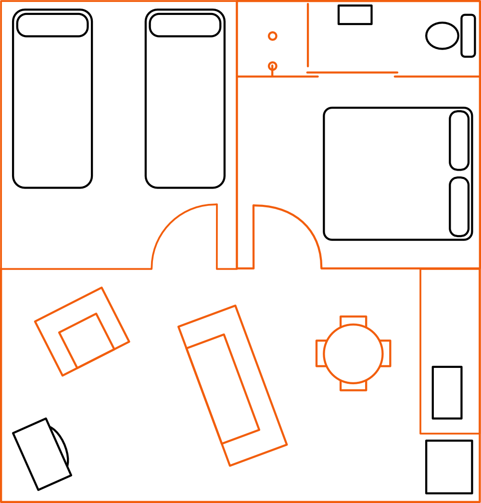
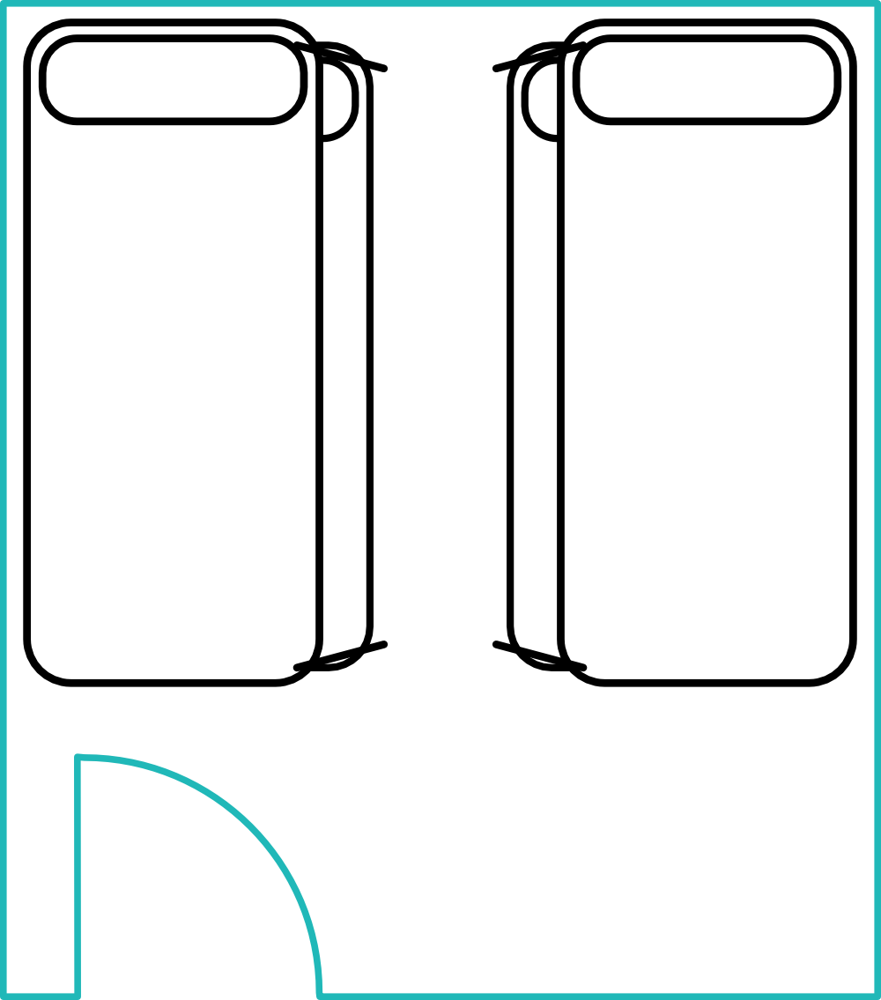
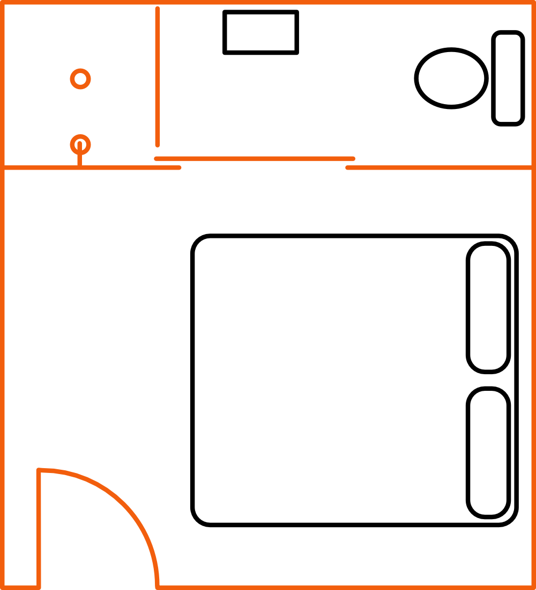
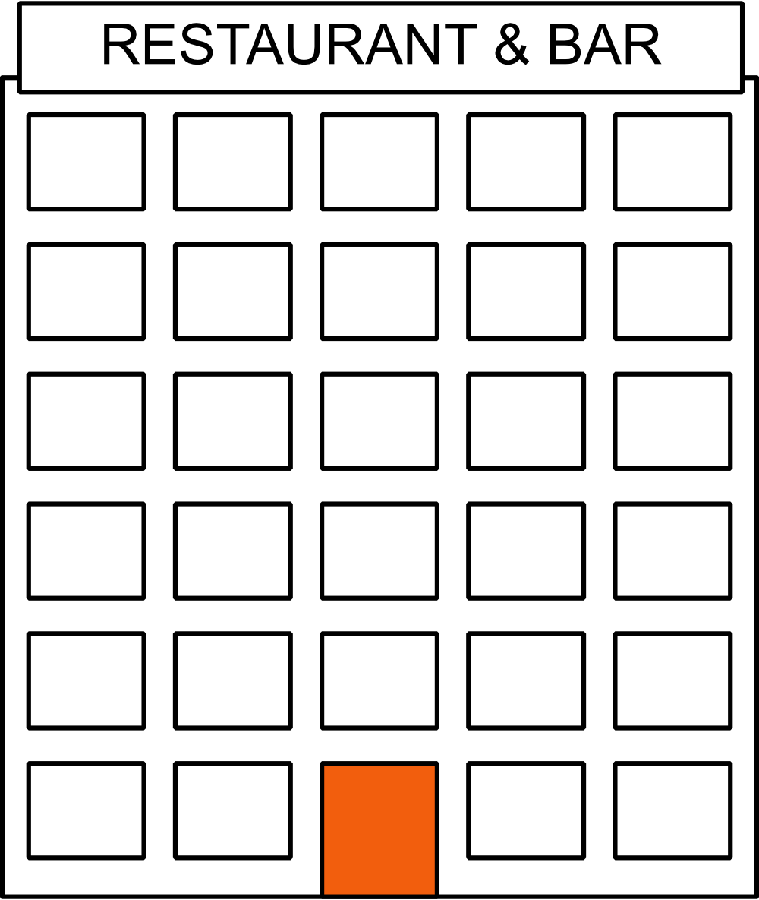
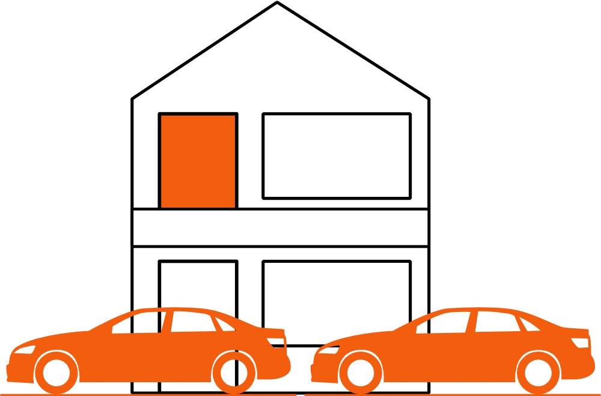
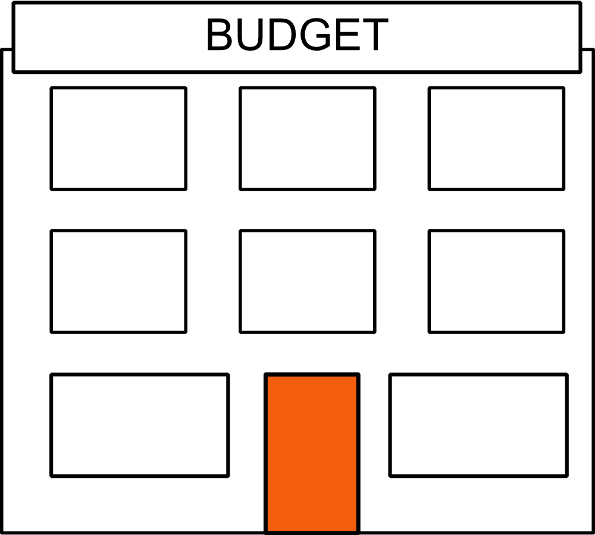
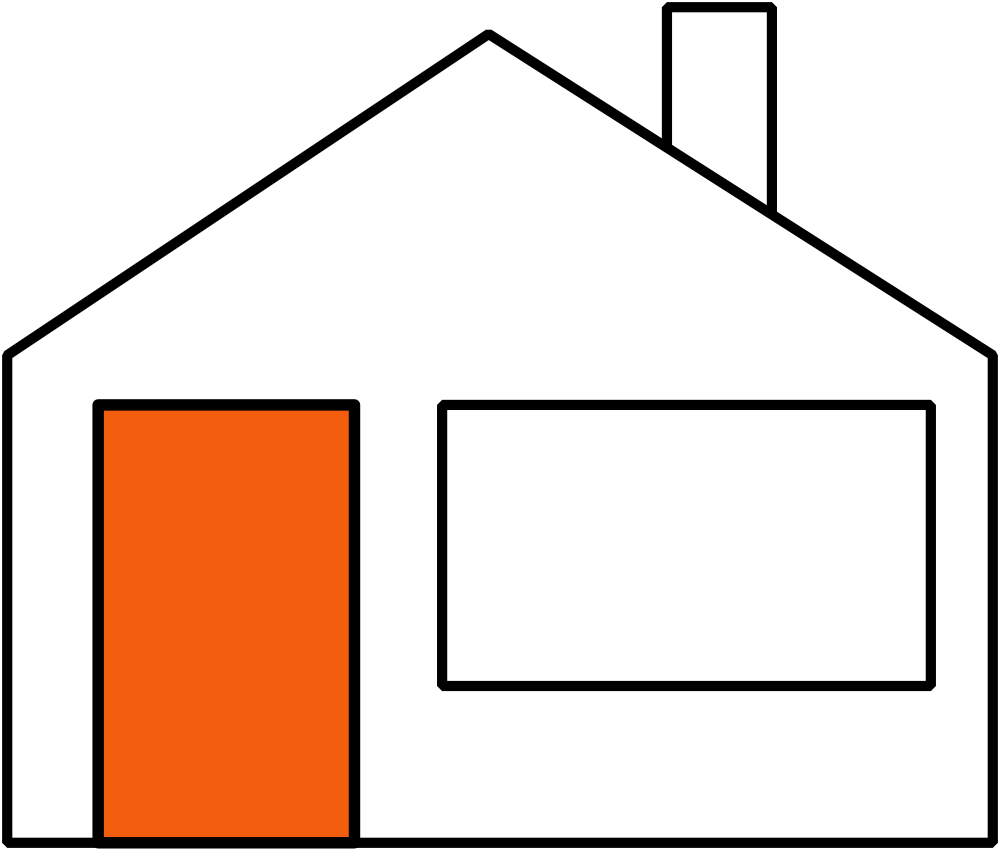

Without a doubt, accommodation will be the single biggest expense of your trip.
New Zealand has built a solid infrastructure of accommodation providers — from Hotels & Motels, Backpackers, B&Bs, Book a Bach, to camping. There will be an option to keep you warm and dry overnight that suits you.
Know what you're booking! A quick description of the following terms should help you pick the right option:

SingleThe rooms
Room names are fairly literal once you know them. A Single room has one single bed. A Double room has one bed that sleeps two. A Twin room has two beds — depending on the property, these can be any combination of single or double beds, so it's worth checking if you specifically need two separates.

Family Suite
Dorm
EnsuiteA Family suite is usually a multi-room setup — a double room, a twin room, and a lounge or kitchenette, sometimes with a pull-out sofa thrown in for extra bedding. A Dorm room sleeps four or more in bunk beds — the biggest on record slept 30. Ensuite gets mentioned constantly in backpacker listings — it simply means the room has its own private bathroom, which is not a given in shared accommodation.
Good to Know
If a backpacker listing doesn't mention ensuite, assume you're sharing a bathroom down the hall.
Dorm sizes vary hugely between backpackers — always check the room capacity, not just the price, before booking.
· · ·
The properties
Hotels are what you'd expect anywhere in the world — usually with a bar and restaurant on site. Motels are similar but generally skip the bar and restaurant, trading them for a car park right outside your door and often a small kitchenette.

Hotel

Motel
BackpackersBackpackers — traditionally called hostels — are the budget backbone of New Zealand travel, with a full spread of single, double, dorm and ensuite rooms usually available under one roof, so a couple and a solo traveller can easily stay at the same place.
· · ·
The homely options
Bed and Breakfasts never really took off in New Zealand the way they did elsewhere, but a few are still about — usually a large house shared with the owners.

B&B / Book a Bach
A Book a Bach gets its name from the website you find and book it through. These are a real mixed bag — B&Bs, lodges, yurts and holiday cottages ("baches") all turn up in the listings.
Search directly at bookabach.co.nz for the widest range of these properties.
· · ·
Under canvas
Camping covers any method where you provide your own housing — tent, van, or otherwise — usually on a powered or unpowered site at a holiday park or campground.
Camping
· · ·
Before you book
Most accommodation providers will ask for credit card information to retain a booking. Although technically holding someone's credit card information for use at a later date is illegal, it's common practice as security. Please remember that by holding the bed or room for you, they're doing so in good faith that you'll turn up and pay on arrival. If you fail to turn up — especially at late notice — it's usually difficult to resell that bed or room, so they've lost out on income they were relying on. In this case you'll usually be charged for one night's accommodation.
Some providers instead charge the card the rate of one night at the time the booking is made — this is the more legal way of doing things.
Either way, avoiding a charge — or getting your money back — can be a bit of a trick, so it's usually best to follow a couple of simple rules. By all means book in advance, but if your plans change:
If Your Plans Change
1. Let the accommodation provider know as soon as you can.
2. Be honest about your reason for cancelling — even if it's just that your mates are staying somewhere else and you want to join them.
Taking this approach will usually get you better results than lying. Most managers have heard all the lines before and will see right through you — if you have a breakdown or a medical situation, just say so. The only time most accommodation providers will play it tough is if it's a really busy period and they've already turned away several people for your bed or room.
· · ·
Pitching a tent, parking where you like
For many years, freedom camping was an accepted method of getting around and saving money on accommodation. Unfortunately, due to the actions of some before you, New Zealand has become increasingly less welcoming of freedom campers.
No longer is parking in a car park or rest area for the night acceptable. Increasingly, the only way you can stay in freedom camping areas is by having a certified Self-Contained vehicle — station wagons and vans rarely fit these requirements, as they can't hold a plumbed toilet.
Be aware: if you buy a cheap vehicle and it already has a self-contained sticker on it, it may not be compliant — someone may have just stuck it on hoping not to get caught.
Yes, this can affect the affordability of your trip around New Zealand, but as mentioned, it's a reaction from councils and communities who've had enough of cleaning up toilet waste and rubbish left in the wake of freedom campers — a few years ago it nearly got freedom camping banned across the country entirely.
Freedom Camping
Before You Freedom Camp
Your vehicle needs a valid Self-Containment certificate — this isn't optional, and rangers do check.
Not every region of New Zealand allows freedom camping, and rules change by council — always check with the local i-site (information centre) or check local signage.
camping-nz.rankers.co.nz has a great map of locations where camping is still permitted.
As summed up by newzealand.com: "Responsible freedom camping is a popular choice for some visitors to New Zealand; but while it is free of charge, it is not free of responsibility."